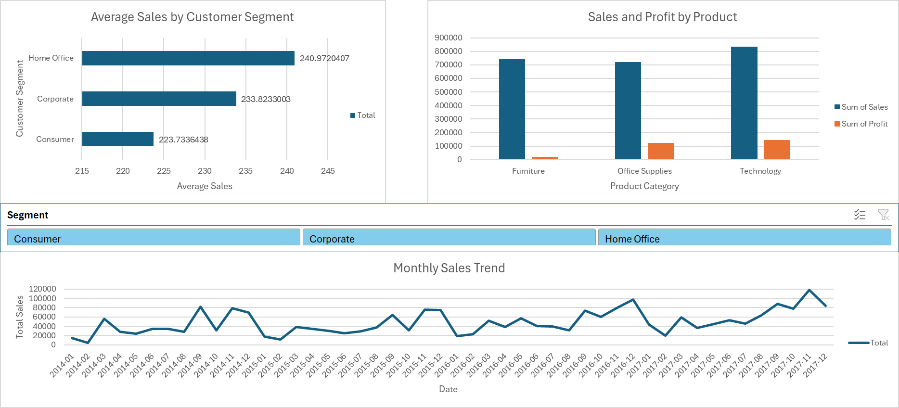
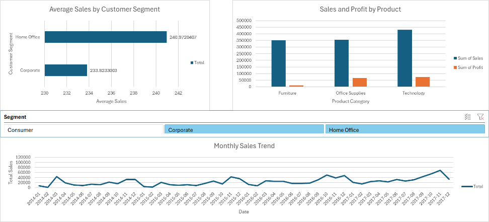
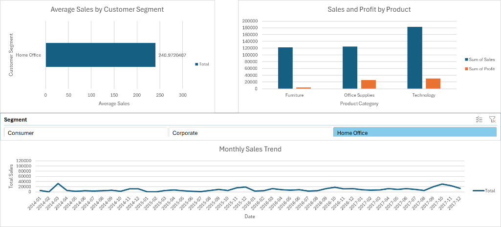
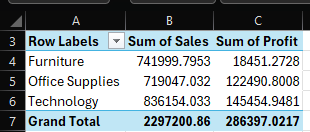

Overview
This project used Excel to turn a transactional retail dataset into a dashboard that could be explored by month and by customer segment. The work combined descriptive statistics, PivotTables, PivotCharts, slicers, and formula-driven feature creation.
Excel PivotTables PivotCharts Slicers AVERAGEIF SUMIF
Approach
- Checked data completeness and descriptive statistics for sales.
- Created an
Order Monthfield from the order date to support monthly trend analysis. - Built PivotTables for monthly sales, category sales and profit, and average sales by segment.
- Connected slicers across multiple charts to support interactive filtering.
- Tested dashboard states for all segments, excluding Consumer, and Home Office only.
Key Findings
- Sales were strongly skewed: mean sales were 229.86, while the median was 54.49.
- The outlier threshold was reported as 498.93, showing that a small number of high-value transactions heavily influenced totals.
- September had the highest monthly sales at 81,777.35, while February had the lowest at 4,519.89.
- Technology generated the strongest profit performance, while Furniture showed weaker profitability relative to sales.
- Home Office had the highest average sales value, while Consumer produced the highest total sales overall.




Metrics
229.86Mean sales
54.49Median sales
81,777.35Peak month sales
1,161,401.05Consumer total sales
Business Value
The project demonstrates how a spreadsheet workflow can still support structured business analysis when the dashboard is designed well. The output made it possible to identify seasonal peaks, compare category profitability, and separate average transaction value from total segment contribution.